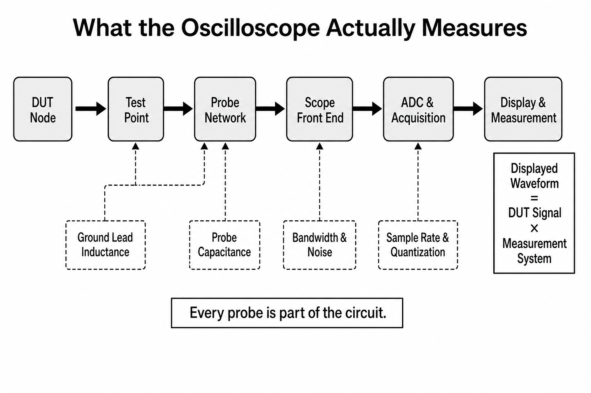

오실로스코프 화면은 신호의 사진이 아니라, analog front-end와 ADC·memory·trigger·display
알고리즘이 만든 대역 제한된 추정치다.
입력 신호는 attenuator와 amplifier를 거쳐 analog bandwidth로 제한되고, ADC가 일정 시간 간격으로
sample을 만든다. acquisition memory에 저장된 점을 interpolation, averaging, peak detect 등으로
표시한다. vertical scale, timebase, channel 수를 바꾸면 sample rate와 record length가 자동으로
바뀌는 장비가 있으므로 화면에 표시된 acquisition 상태를 확인한다.
대역폭·rise time·기록 시간
tr,scope ≈ 0.35/BWGaussian형 1차 감각
tr,obs ≈ √(tr,sig²+tr,scope²)독립 rise-time 결합 근사
Trecord = N/fsmemory와 sample rate
falias = |f−k·fs|Nyquist zone으로 접힌 성분
Nyquist의 fs>2f는 band-limited sine을 복원하는 이론적 최소 조건이다. edge 모양, noise와
interpolation에 충분한 점을 얻으려면 더 높은 oversampling이 필요하다. bandwidth와 sample rate는
다른 제한이다. ADC sample이 많아도 analog front-end가 감쇠한 성분은 돌아오지 않고, bandwidth가
넓어도 sample이 부족하면 alias가 생긴다.
LAB 13A
샘플링과 alias
signal/sample 주파수 비를 바꾸고 같은 sample을 설명하는 느린 가짜 파형을 본다.
Nyquist 50 MHz화면 alias 10 MHz
LAB 13B
대역폭이 edge를 느리게 보이는 정도
실제 signal rise time과 scope bandwidth의 root-sum-square 결합을 계산한다.
scope tr 0.70 ns관측 tr 1.22 ns오차 22%
DRAW 13
화면까지 이어지는 전체 측정 체인
각 블록은 정보를 전달하면서 동시에 loading·noise·bandwidth 제한을 더한다.

화면 파형은 DUT 하나의 속성이 아니라 DUT와 측정 시스템의 결합 응답이다. 오류를 줄이려면
probe만 바꾸지 말고 test point geometry, ground, front-end 설정과 acquisition 상태를 함께 기록한다.
원리 더 깊게
오실로스코프를 선형 시스템으로 보기
작은 신호 범위에서 probe와 front end를 LTI 시스템으로 근사하면 측정 파형은
ymeas(t)=xDUT(t)*hprobe(t)*hscope(t)처럼 impulse response와의 convolution이다.
주파수 영역에서는 곱셈 Y(f)=X(f)Hprobe(f)Hscope(f)가 되어 bandwidth 제한, phase
distortion과 resonance가 파형에 어떻게 섞이는지 설명한다.
Amplitude response
−3 dB bandwidth는 amplitude가 약 0.707배가 되는 한 점이며, 그 아래가 완전히 평탄하다는 보장은 아니다.
Phase response
harmonic마다 delay가 다르면 amplitude가 맞아도 edge overshoot와 settling이 달라진다.
Noise와 quantization
vertical scale, front-end noise, ADC ENOB와 averaging 방식이 작은 ripple의 uncertainty를 정한다.
Trigger bias
trigger 조건에 맞은 사건만 화면에 모이므로 드문 glitch의 분포를 대표하지 않을 수 있다.
de-embedding은 H(f)를 나누는 역문제라 H가 작은 대역에서는 noise를 크게 증폭한다. 장비가
보정 기능을 제공해도 fixture characterization 범위, reference plane과 regularization 조건을
기록하고 보정 전 파형을 함께 남긴다.
손으로 푸는 예제 · 1 ns edge를 500 MHz로
500 MHz scope의 자체 rise time 근사는 0.35/500 MHz = 0.70 ns다. 실제 1.00 ns signal을 재면
관측 rise time은 √(1.00²+0.70²) = 1.22 ns다. 반대로 1.22 ns를 측정했고 scope 0.70 ns를
안다면 signal은 √(1.22²−0.70²) ≈ 1.00 ns로 추정한다. 이 근사는 response shape와 독립 오차
가정이 맞을 때만 쓴다.
상식 점검: scope bandwidth가 무한히 커지면 관측 rise time은 signal 자체 값에 가까워져야 한다.
보드 검증에서
rail은 DC level, startup ramp, ripple, transient를 서로 다른 timebase와 coupling 설정으로 본다.
clock은 frequency뿐 아니라 amplitude, duty, startup, jitter와 enable 조건을 확인한다. reset은
rail 안정과 clock 이후의 sequencing을 함께 기록한다. single-shot event를 볼 때 필요한 record
length는 관찰 시간×sample rate이며, 너무 긴 record가 update rate를 낮출 수 있다.
측정 절차
먼저 예상 amplitude와 최대 안전전압을 확인하고 probe attenuation을 scope와 일치시킨다. vertical
scale을 waveform이 화면을 충분히 채우도록, timebase는 원인과 결과가 함께 보이도록 잡는다.
edge trigger의 source, level, slope, coupling을 명시하고 bandwidth limit/averaging을 켠 경우
원본 acquisition과 비교한다. 자동 측정 숫자는 cursor와 파형으로 sanity check한다.
오개념 경보
“1 GS/s면 500 MHz까지 항상 정확히 볼 수 있다.”
500 MHz sine에 cycle당 2점뿐인 이론적 경계이며 amplitude/phase가 sample clock 관계에 매우
민감하다. scope analog bandwidth, anti-alias filter, interpolation, channel interleaving과
record 설정도 필요하다. edge 측정에는 대체로 여러 배의 sample과 충분한 analog bandwidth가
요구된다.
셀프 체크
bandwidth와 sample rate의 차이는?
bandwidth는 analog front-end가 통과시키는 주파수 범위, sample rate는 ADC가 시간당 얻는 점의 수다.
record length가 부족하면 어떤 문제가 생기는가?
높은 sample rate로 긴 사건을 동시에 담지 못해 시작과 원인 또는 느린 modulation을 놓칠 수 있다.
trigger의 목적은?
관심 사건을 시간 기준에 맞춰 안정적으로 획득하고 드문 event를 조건부로 포착하는 것이다.